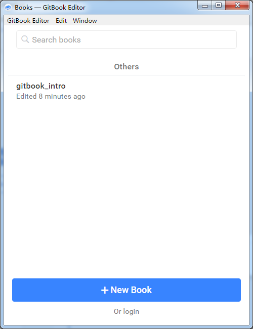
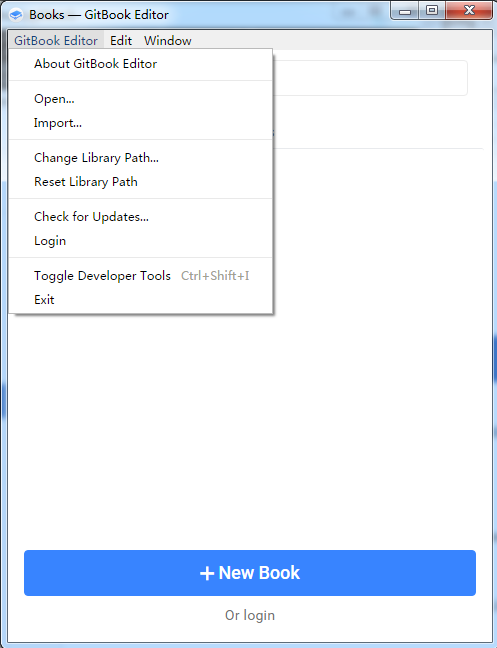
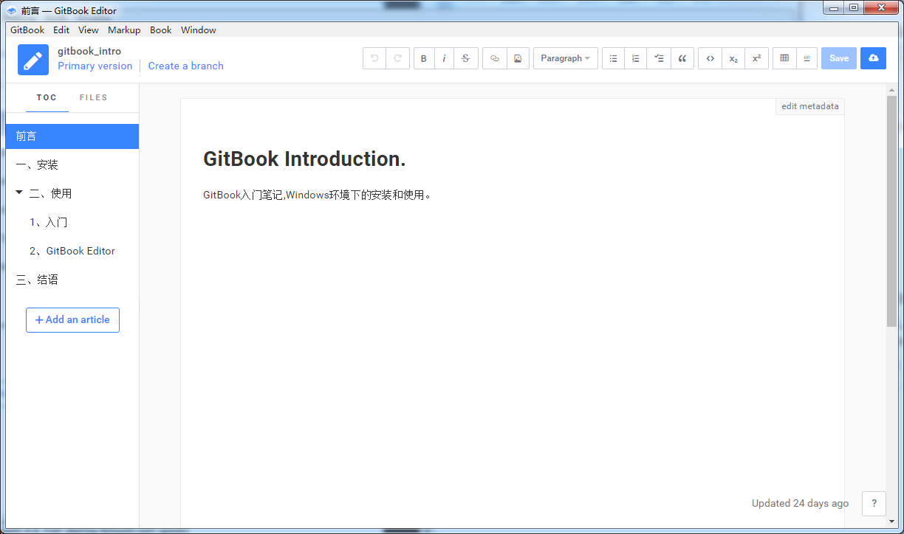
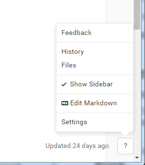
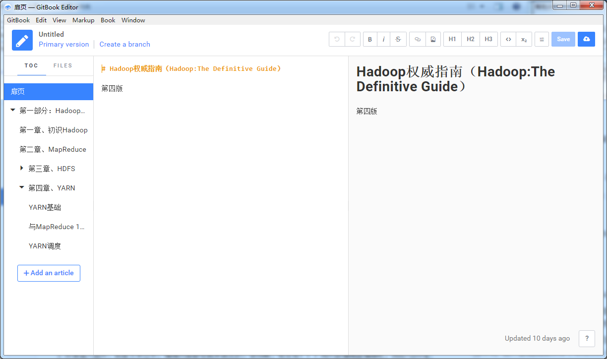
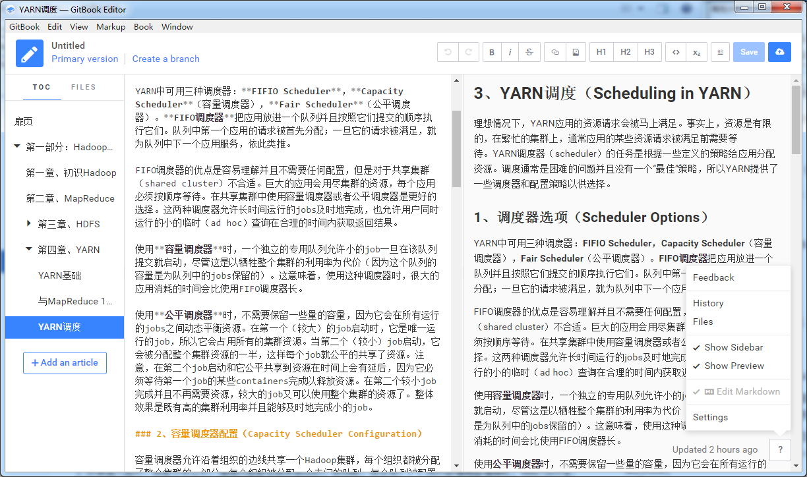
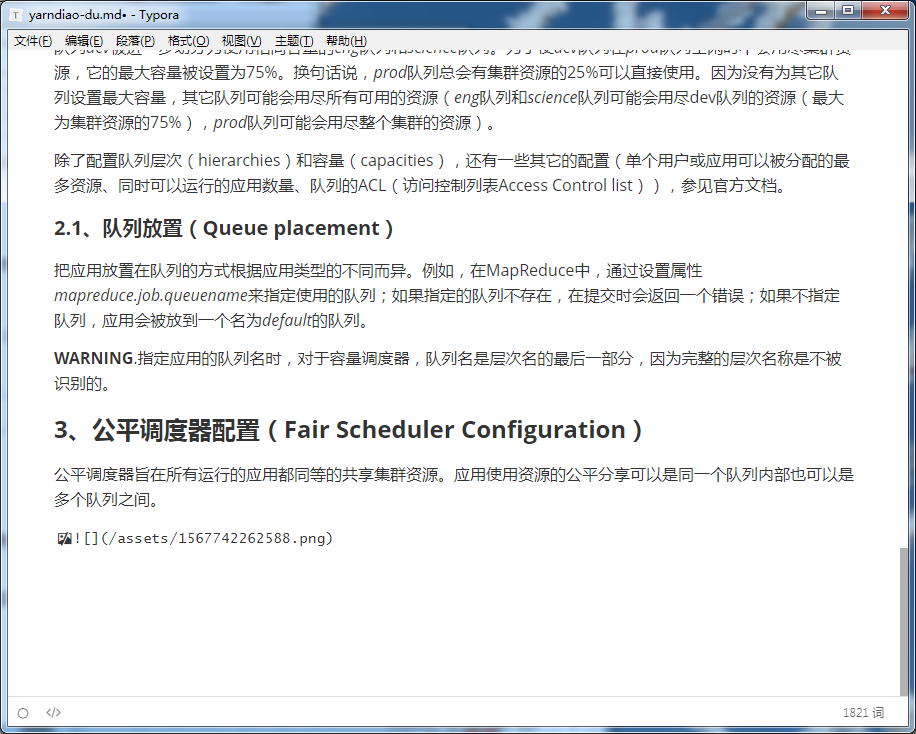
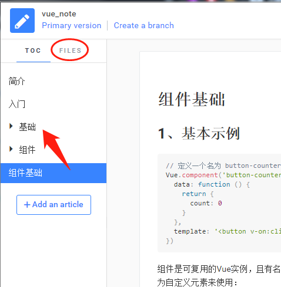
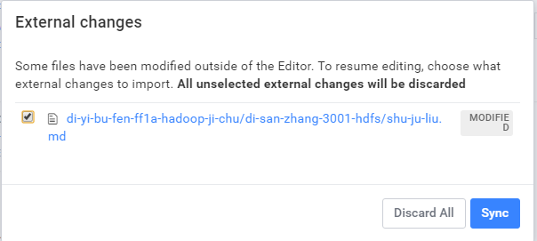
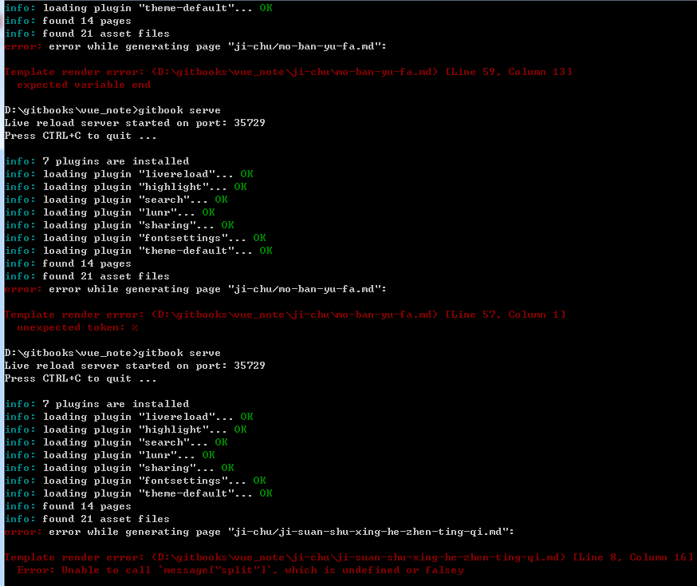

GitBook Editor界面

GitBook Editor使用很简单，不用做过多的介绍！
1、默认目录（Library）
书籍的默认Library目录为：C:\Users\Administrator\GitBook\Library\Import

可以通过菜单“GitBook Editor ->Change Library Path... ”来更改Library目录。
更改后，Editor主界面会显示，libray目录的文件夹和书籍目录。
通过菜单“GitBook Editor -> Reset Library Path ”，可以重置Library为默认的目录。
2、打开（Open）和导入（Import）
打开：是直接打开书籍，进入书籍的编辑界面；打开的书籍应该是一个git的目录，并且至少commit过一次，不然无法打开。
导入：是将书籍导入到当前的Library；导入后的书籍会被复制到Library目录下的Import目录中；如果不是git目录或者没有执行过commit也无法通过GitBook Editor打开。
3、新建书籍（New Book）
新建的书籍在Library中，默认的在Libaray的Import目录中。
新建的书籍是一个git目录。
所以，可以通过git来管理GitBook Editor编辑的文件；这也是我使用GitBook的目的，这样就不用使用什么“云笔记”之类鸡肋的东西来做笔记了。
GitBook本身也是基于Git的，但是GitBook登录比较难……所以就不使用用GitBook的Git来管理了。
新建书籍的Git是没有配置远程仓库的，自己配置就好，剩下的就Git解决！
4、预览
GitBook Editor本身就是可视化的，所写即所见；
如果想要只读方式的预览，那么和基础的使用那样，要执行gitbook serve命令，编译书籍、启动web服务，使用浏览器通过url来预览；或者编译后，本地预览。
GitBook Editor默认是不编译书籍的，即没有编译后的目录_book。
5、编辑
用GitBook Editor打开书籍后，即进入编辑界面：

点击左侧的目录，可以进行目录间的切换。在左侧可以进行目录的编辑。在编辑区域可以直接进行内容的编辑。
点击右下角的“？”帮助按钮，弹出如下菜单：

选择“Edit Markdown”选项，进入如下图的Markdown代码编辑模式：

左侧为markdown代码编辑，右侧为预览。
但是，遇到了一个问题，不知道是不是bug，在某个文档“Edit Markdown”选项失效了，MMP，切不回去了！！！
在后来的使用过程中发现，貌似是因为编辑器检测到了GitBook Editor预览中不支持的markdown代码。例如Typora支持注释，而GitBook Editor预览是无法显示注释的；此外>\<，在GitBook Editor的markdowncode中是转义字符，如果Typora编辑时，不注意GitBookEditor中无法正常显示。还有，Gitbook Editor是不支持下划线格式的，但是Gitbook是支持的。
综合体验下来，还是用Typora编辑器编辑内容比较友好；使用GitBook进行文件管理时要注意把图片路径保存道数据目录下的“/assets/”目录下，并修改图片的路径。

6、更改目录结构
正常情况下编辑视图左侧的目录管理栏可以通过“Add an article”按钮添加文件和目录，通过鼠标右击目录，可以添加子目录。拖动目录可以修改目录的顺序。
改变既存目录结构时，有些不同，如果要将“组件基础”放在“基础”目录下：

展开“基础”目录，拖动“组件基础”目录到“基础”目录下合适的位置即可。
999、其它注意事项
偶然的发现进程中有一个“1567581776429-uhub_x64.exe”，前面的数字可能不同。
把进程kill掉之后，在gitbook editor界面点击“保存”按钮，会弹出“error”的提示。重启“Gitbook Editor”主界面，再次执行保存，就可以了。这是进程列表中就会多一个“1567581776429-uhub_x64.exe”这种进程。
好像插入图片、或者文本过长，编辑页面都会跳来跳去的。很烦啊，有没有！！！用外部编辑器编辑吧，例如Typora。在外部编辑器保存，GitBook editor检测到文件变化会弹出如下提示，点击“Sync”按钮便可看到更新后的结果。

1000、报错一
gitbook serve或gitbook build时，报错误如下，报错的文件可能不一样
Error: ENOENT: no such file or directory, stat 'd:\Mine\doc.gitbook\_book\gitbook\gitbook-plugin-fontsettings\fontsettings.js'
修改文件：C:\Users\Administrator.gitbook\versions\3.2.3\lib\output\website\copyPluginAssets.js，67行和112行
return fs.copyDir(
assetsFolder,
assetOutputFolder,
{
deleteFirst: false,
overwrite: true,
confirm: true
}
);
将confirm对应的值改为false。
生成电子书时，报错：
Error: ENOENT: no such file or directory, stat 'C:\Users\ADMINI~1\AppData\Local\Temp\tmp-99123cpb2NfGWdHm\gitbook\ebook.css'
解决方式相同。
1001、报错二
运行gitbook build或gitbook serve时报错Template render error，详情如图：

这些错误都是有两个连续的{或}引起的。两个{或}中间用空格分隔，就可以避开这个错误。